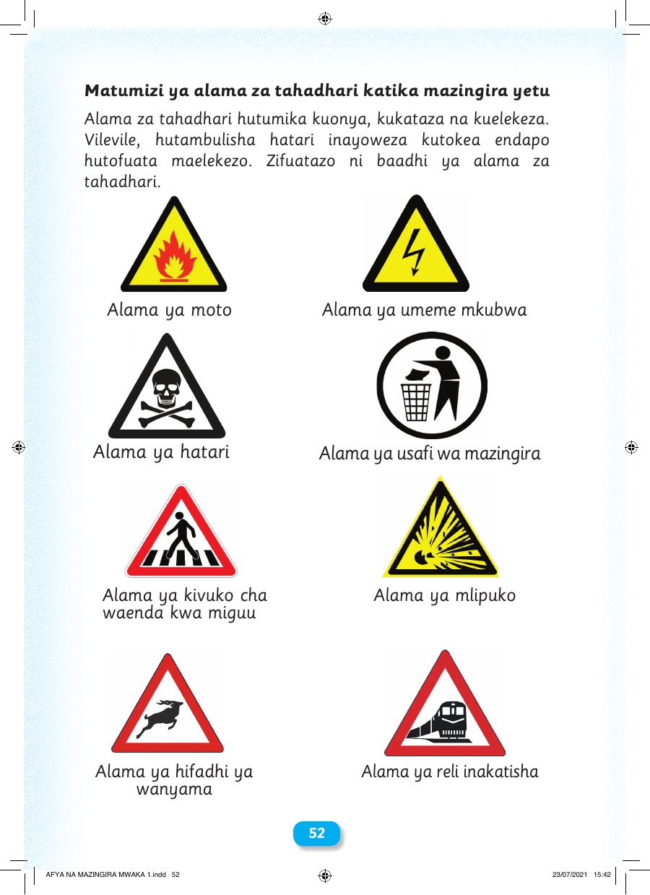

Matumizi ya alama za tahadhari katika mazingira yetu Alama za tahadhari hutumika kuonya, kukataza na kuelekeza. Vilevile, hutambulisha hatari inayoweza kutokea endapo hutofuata maelekezo. Zifuatazo ni baadhi ya alama za tahadhari. Alama ya moto Alama ya umeme mkubwa Alama ya hatari Alama ya usafi wa mazingira Alama ya kivuko cha Alama ya mlipuko waenda kwa miguu Alama ya hifadhi ya Alama ya reli inakatisha wanyama 52 AFYA NA MAZINGIRA MWAKA 1.indd 52 23/07/2021 15:42